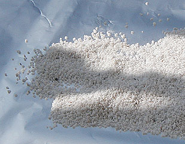
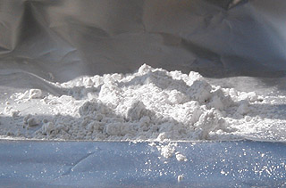
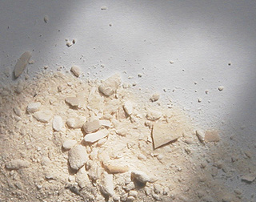

|
Charges
incolores
Les résines transparentes pour
l'acrylique et l'huile sont traitées séparément sur ce site car leur fonction
est plus complexe que celle d'une charge. De même, le sel, employé par les
aquarellistes, ne peut être traité au chapitre des charges car il est surtout
utilisé pour créer des "effets" picturaux.
Description, précisions importantes
Qu'il s'agisse de charges, d'agents
d'empâtement ou d'épaississants, le problème est sensiblement le même : il
s'agit d'encombrer la pâte avec un produit sensiblement incolore qui se contente
d'occuper du volume de la manière la plus neutre possible, sauf dans les cas où
la matité, la brillance ou la granularité sont recherchées.
En peinture à l'huile, ces produits ne doivent pas s'opposer à la siccativation.
Ils doivent même parfois la faciliter.
On compte deux grandes catégories de charges incolores :
* les charges liantes (cire, chaux,
liants émulsionnables, etc.)
* les charges non liantes (poudres,
matières sans viscosité). On peut nettement distinguer :
* les
colloïdes, qui ne sont pas dépourvus de viscosité au moment de leur mise en
solution. Ils ne sont pas "liants" à proprement parler, mais ne sont pas
insensibles aux milieu qui les entoure ;
* les
cristalloïdes, qui sont dépourvus de toute réactivité et subissent avant
tout la loi de la pesanteur. Les charges cristalloïdes sont d'une manipulation
délicate.
L'appartenance d'un produit à l'une de ces catégories est
indiquée en tête de chaque rubrique.
Important : lire aussi
l'article
Pâtes, charges et agrégats.
_____
Charges transparentes
traditionnelles
|
Les cires
(charges liantes) |
Les plus anciennes charges en terme de produits
auxiliaires
bruts sont probablement
les cires, d'usage antique. S'agit-il d'ailleurs vraiment de charges ?
Disons qu'elles sont des liants faisant office de
charges.
Bien que se rangeant dans la catégorie des charges liantes, les cires
sont fragiles et doivent être introduites parcimonieusement dans la pâte
pour éviter de fragiliser celle-ci. Sans huile, la cire s'empâte bien,
certes, mais elle est vraiment très très friable. Un mélange huile-cire
donne d'excellents résultats, que ce soit sous la forme d'un liant ou d'un
médium (médium vénitien).
Lire l'article consacré aux cires comme adjuvants. |
|
La poudre de marbre
(charge non liante cristalloïde) |

Un peu plus récente, la poudre de marbre est encore assez
utilisée. Demander le grain fin de préférence (voir
image ci-dessous). Le grain moyen (ci-contre)
peut être exploité pour créer une matière au moins aussi grenue que le sable.
Quel qu'en soit le grain, la poudre de marbre n'est pas tout à fait
incolore : elle est blanchâtre et très légèrement teintée (vert ou autre
couleur, en fonction de la provenance du marbre). Elle doit être adjointe
de liant (huile,
liant acrylique, etc.) et peut être
considérée, au point de vue de sa préparation, comme la soeur jumelle du
"pigment incolore" qu'est l'hydrate
d'alumine, c'est-à-dire qu'elle est tout
aussi fragilisante pour la peinture à l'huile car c'est un
cristalloïde qui n'a aucune viscosité lorsqu'il est mis en solution.
Dans l'huile particulièrement, elle "tombe", elle glisse et crée des
accidents picturaux.

L'emploi de certains adjuvants (voir notamment
La cire comme adjuvant) ou des siccatifs
peut permettre de "figer" la pâte avant que la chute de la poudre provoque
des catastrophes. Il faut cependant utiliser ces produits de manière
mesurée.
Lire absolument un
passage in Les terres blanches
sur la composition et la structure de ce produit.
Voir aussi Les marbres
et le passage consacré à l'hydrate
d'alumine, ci-dessous.
|
|
Les émulsions
(charges liantes) |
Les substances destinées à produire une
émulsion sont d'un usage souvent ancien. Elles se classent en différentes
catégories :
* les émulsions
fines, réalisées avec l'oeuf combiné à l'huile.
Elles n'apportent guère d'épaisseur supplémentaire et leur destination
s'apparente à celle d'un médium plutôt liquide
* les émulsions épaississantes (huile +
liant aqueux). Citons la chaux. Fortement
alcaline, il peut être utile de neutraliser son
pH à l'aide d'un ester. Un travail peu simple qui peut être long
étant donné la lenteur naturelle des esters sur le plan de la réactivité
chimique. Sans neutralisation, le choix des pigments doit être
impérativement réduit à la palette de la peinture à
fresque. de plus, il faut l'employer en petite quantité car même
très pure, elle est un peu colorée. En revanche, l'empâtement réalisé à
l'aide de chaux est bien solide et
siccative bien.
|
|
L'os de seiche
(charge non liante colloïde)
|

Nous sommes quelques uns à avoir essayé
l'os de seiche lavé, réduit en poudre et longuement séché.
Son comportement est intéressant : d'une
transparence moyenne, d'une certaine neutralité chromatique bien que
plutôt blanc, il présente une assez bonne tenue dans la pâte. Il a
quelques inconvénients :
- il est légèrement alcalin et tend à brunir, avec le temps, en
présence de peinture à l'huile
- il est difficile de le broyer finement (voir ci-contre) car même
très sec il demeure mou. Il est donc adapté aux "effets de matière"
assez grossiers
- ce n'est pas facile de se le procurer pour qui n'habite pas sur le
littoral ! Toute personne connaissant d'autres produits et procédés de
fabrication anciens ou naturels ayant d'aussi bonnes qualités de
transparence et de neutralité chromatique est chaleureusement
invitée à faire partager ses connaissances. |
____
Charges transparentes
contemporaines
charge non
liante cristalloïde
L'hydrate d'alumine
(lire l'article alumine du glossaire) est un produit brut contemporain
qui ne peut être utilisé n'importe comment, sans précautions. Pourtant, c'est un "must", un
"incontournable" qu'il faut vraiment essayer.
Lire en premier de préférence l'article
Pâtes, charges et
agrégats.
Inerte (testé dans différentes solutions neutres,
cet élément laisse
indifférent le papier tournesol), il peut être combiné avec
à peu près n'importe
quel liant : huile, acrylique, etc., mais de manière différente
en fonction du temps de séchage impliqué par la technique utilisée. Un liant
aqueux à "prise rapide" (l'acrylique, par exemple), autorise un emploi
massif et des empâtements nettement
plus audacieux qu'un liant "lent" comme l'huile, qui nécessitera l'adjonction
d'autres substances même pour une épaisseur relativement faible.
Cette charge présente des points forts : sa très grande transparence
et sa totale neutralité chromatique et chimique, mais par contre, elle ne recèle aucune
propriété solidifiante - c'est un euphémisme : en fait,
elle est
fragilisante pour la peinture à l'huile, comme la poudre
de marbre ou toute charge cristalloïde. Elle
affiche un grand mépris de son environnement.
Elle glisse, tombe, n'obéissant qu'à la pesanteur alors même que l'huile
commence à durcir.
Les résultats peuvent être catastrophiques. Ils se
reconnaissent à des plissures en demi-cercle si le tableau a été peint à la
verticale ou bien en sortes de réseau complexes s'il a été réalisé à
l'horizontale.
Pour les empâtements à l'huile ou tout emploi en
grande quantité, l'hydrate d'alumine doit donc être combinée à bon escient avec d'autres agents comme la cire (lire les textes
La
chaux - utilisation en peinture à l'huile
et La cire comme adjuvant),
éventuellement des siccatifs ou
bien d'autres charges, permettant une bonne réticulation
tout
en figeant le mouvement de chute.
Elle donne quand même des résultats magnifiques en glacis
peu chargés, d'épaisseur modérée, en présence d'une bonne dose de
résine.
Dans l'exemple ci-dessus (photo), l'épaisseur de la pâte traitée avec l'alumine et sa
transparence - qui ne produit qu'un très léger flou malgré une surface très
accidentée - sont rendus
sensibles par les éléments ajoutés en "avant-plan", bien nets, qui
semblent flotter sur un plan interposé, comme sur une sorte de vitre.
Un résultat un peu semblable bien que moins transparent peut être obtenu en peinture acrylique à l'aide de
gels moyennement épais.
L'alumine est matifiante, ce qui
peut rendre bienvenue
l'adjonction de dammar (très brillant et très
peu coloré) ou pour l'acrylique, de
médium brillant. Pour l'huile, le baume de térébenthine de Venise
permet de limiter les embus. Cependant, il faut
signaler que l'on peut aussi utiliser la charge précisément pour créer
volontairement des embus.
Employée conjointement à une émulsion
huile/méthylcellulose, l'hydrate
d'alumine blanchit. Lentement, en séchant, elle redevient cependant transparente
(il faut compter quelques jours ou davantage). Si des zones blanches demeurent
au coeur de la pâte, cela signifie que l'émulsion n'a pas pu évacuer son eau
qui reste piégée, accident récurent avec cette émulsion. Celle-ci, de toutes
façons, donne une pâte beaucoup moins limpide que l'huile pure ou mélangée
à d'autres liants et cela est rendu encore plus sensible par la présence de la
charge.
Certaines sources évoquent l'association d'alumine
avec d'autres substances que l'hydrate (qui n'est autre que H2O) :
phosphate, stannate, sulfate (mentionnés par Xavier de
Langlais), borate
d'alumine - voir ures, ites et ates. Nous n'avons pu nous procurer ces produits,
dont aucun n'est annoncé comme "colloïdal". L'hydrate d'alumine
est inerte et ne pose pas de problèmes d'incompatibilité,
contrairement aux sulfates, noircissant au contact du plomb des siccatifs.
L'acétate
d'alumine est signalée comme imperméabilisant des gélatines, dont la colle
de peau.
_____
charge non
liante cristalloïde
Les microbilles de verre sont des
charges cristalloïdes sur lesquelles nous n'avons aucune information pour le
moment.
_____
charge non
liante colloïdale
La silice colloïdale est largement utilisée en peinture
décorative, mais aussi, en moindres proportions, en peinture artistique. Elle
est un produit du plus haut intérêt. Il apparait que :
* cette charge est assez grisâtre quoique
non dépourvue de transparence
* sa "plasticité" est particulièrement
remarquable pour l'empâtement, y compris en peinture à l'huile (nous disposons
d'ailleurs de témoignages concordants)
* elle est absorbante. Contrairement aux
charges cristalloïdes, elle semble absorber l'huile comme le ferait un pigment
moyen. Une certitude : elle n'est pas insensible au milieu qui l'entoure.
Un descriptif
approfondi de
la silice colloïdale est disponible dans l'article du glossaire qui lui est consacré.
Cliquer ici
_____
charge non
liante en association pigmentaire nanométrique
Les pigments à nanocharges sont abordés dans la section « Hi-Tech ».
Cliquer ici
_____
charge liante
Le liant méthylcellulosique, facile à émulsionner avec les
huiles à peindre, semble assez bien se conserver.
Il est
assez utilisé, y compris avec la peinture acrylique ou vinylique.
Optiquement parlant, il semble moins neutre, plus trouble qu'une
charge telle
que l'alumine par exemple, surtout en émulsion
maigre. En peinture à l'huile, il est un peu blanchâtre avant séchage
complet.
Son pouvoir solidifiant
pour la pâte est remarquable : il est lui-même liant et à ce titre contribue
à la solidité générale s'il est appliqué gras sur maigre. Les recettes de médiums à l'huile prévoient
quand même l'adjonction de résines et de siccatif à ce produit (voir article)
- ajout inutile pour les peintures synthétiques aqueuses.
Dans le travail en empâtement, qu'il s'agisse d'huile ou
d'acrylique, l'adjonction d'un siccatif
ou d'un gel
solidifiant est malheureusement indispensable. Sans cela, avec
l'huile, la pâte forme une peau, le dessous tarde
grandement à siccativer ou ne siccative jamais. Avec l'acrylique, des
craquelures peuvent apparaître.
De toute manière, ce liant étant réversible, il faut
veiller à ne pas l'employer en trop grande quantité si votre travail implique
l'apposition de glacis multiples, quoique le mode d'application (voir posé
vs brossé) puisse éviter dans une certaine mesure les problèmes de
mise en solution intempestive des couches inférieures.
_____
charges liantes
Différentes
émulsions
En peinture à l'huile, les émulsions "huile + certains liant
aqueux" peuvent être utilisées comme charges, comme on l'a vu ci-dessus avec
l'émulsion huile/méthylcellulose. Mais certaines émulsions fines, notamment
l'émulsion à l'oeuf, ne rentrent pas véritablement dans ce cadre car elles ne
"chargent" pas vraiment la peinture.
Parmi les alkydes, certains liants et médiums plus ou moins
épais sont employés par les peintres. Les temps de séchage sont
effectivement intéressants. Il est cependant impératif de tester les produits
car, plus ou moins maigres, on ne peut pas les employer à n'importe quelle
phase de l'élaboration d'un tableau. De plus, certains donnent un film fin qui
ne présente pas plus d'intérêt que des produits classiques pour l'huile.
Comme nous le signalions au sujet de l'oeuf, toute émulsion n'est pas
forcément épaisse et ne peut être considérée comme charge.
Lire
l'article sur les émulsions.
_____
charges non
liantes ou semi-liantes
En dehors du liant méthylcellulosique, les épaississants pour
l'acrylique sont les "médiums-gels"
du commerce.
Certains sont de puissants agents d'empâtement.
Retour
début de page
|
|

 Communication
Communication


|